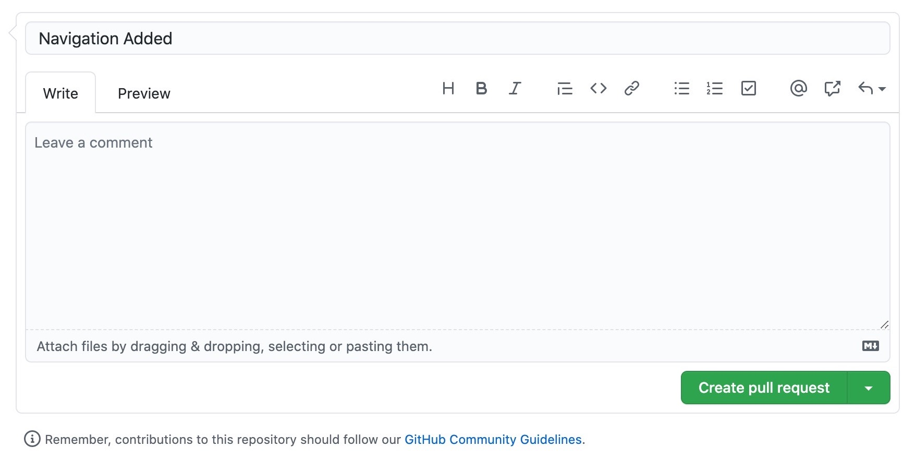
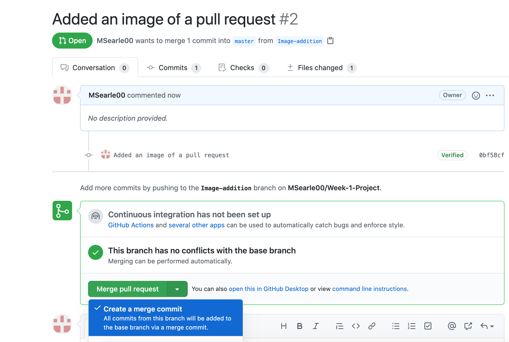

Github Workflow

As shown in the image above, the Github workflow is branch-based and supports projects that have regular depoloyments.
- A branch is an isolated set of code, which is under version control, meaning modifications do not alter the master branch and can happen alongside each other in separate branches. These branches get merged and added to the master once they are complete and tested.
- A commit is a change to a file.
- A pull request is essentially a request for a review. It allows people to view your commits, discuss any modifications if needed and submit their own commits if necessary.  

Other info?
Click here for a tutorial.